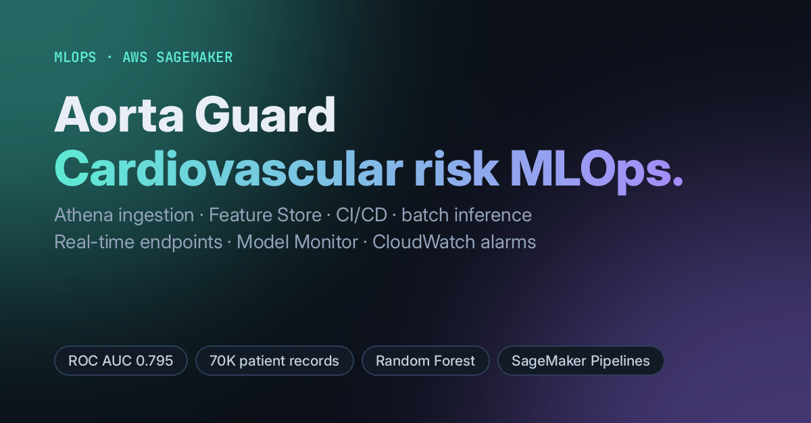

MLOps · AWS SageMaker
Aorta Guard: Cardiovascular Risk MLOps Pipeline
A model is only half the job. Aorta Guard flags at-risk patients from routine clinical and lifestyle measurements, and it also covers the production work around the model: versioned features, automated training and deployment, batch scoring, and drift and infrastructure monitoring.

- Final model: a tuned Random Forest with ROC AUC 0.795 and 0.73 accuracy on a held-out test set.
- Data: 70,000 patient records, engineered into 24 features. 40% of the data is held back as a production reserve that feeds inference and monitoring.
- Pipeline: S3 → Athena → SageMaker Feature Store → training → CI/CD scripts → Batch Transform and real-time endpoints.
- Monitoring: Model Monitor baselines plus CloudWatch dashboards and alarms for 4XX/5XX errors, CPU and memory.
- Top predictors: systolic blood pressure, cholesterol-to-BMI ratio, and BMI.
AWS SageMakerFeature StoreModel MonitorCloudWatchAthenascikit-learnPython
View code on GitHub →Watch the demo